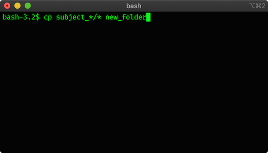

The Terminal and Command Line¶
A terminal is a window into which you can type commands that are then executed by your computer’s operating system. The cursor point in the terminal where you type is called the command line, and so a terminal is sometimes also referred to as a command-line interface (CLI). The name “terminal” comes from the days before desktop computers, when a computer occupied a set of cabinets or even an entire room. A terminal was a device with a (text-only) monitor and keyboard whereby a user could control the computer from a distance over a dedicated, wired connection. One computer could have multiple terminals connected to it, allowing multiple people to work at the same time. Nowadays, most people don’t interact with their computers via the terminal, because graphical user interfaces (GUIs) are far easier to learn and use. However, to perform some tasks, terminals are a valuable tool. If your computer is running a Mac, Windows, or Linux operating system, you have a terminal program built into your computer already! On the Mac it’s intuitively called Terminal, while on Windows it is called cmd.exe. On the most basic Linux systems, the command line is what you get by default when you turn on the computer (unless you have a windowing package installed, in which case there are various terminal apps).
{kind=link}
Fig. 1 A DEC VT100 terminal at the Living Computer Museum (apparently connected to the museum’s DEC PDP-11/70 mainframe computer). Source: Wikipedia¶
{kind=link}
For example, imagine you had data from a study of 25 human participants. Each participant’s data is stored in a separate file, inside a folder with that participant’s name (e.g., subject_01, subject_02, etc.). If you want to copy all those files into one new folder using the GUI, you would need to click your way through 25 files, and copy or drag each one to the new destination. You might accidentally skip one or make other errors (in my lab, we once temporarily “lost” data from an entire study, because someone accidentally dragged that folder into another study’s folder!). If we instead use the command line to perform this task, we need only type one line into the terminal: cp subject_*/* new_folder. Later we’ll learn what that all means, but suffice to say, that one line copies every file in every folder whose name starts with subject_ to a folder called new_folder.

You can also run a programming language from the command line. Indeed, whenever you use a terminal on a modern computer, you are working in some sort of computer language: the commands that it will understand are its language. These CLI languages are called shells. However, shells are not powerful programming languages; they are designed primarily to work with files (e.g., copying them) and to execute programs. For example, if in the terminal you type ipython you will start the ipython application, and the command line will switch from running your commands in the shell, to running them in Python. Now you can type Python commands, hit enter, and get the result of running the command. This is called a REPL, which stands for read-evaluate-print-loop — an interface that reads a typed command, evaluates (runs) it, prints the result (if any), and waits for the next command (loops back to the start of the R-E-P sequence of events).
This is not super-efficient, because usually it takes many lines of code to achieve a real task. Although we could type each line of code into the command line in sequence, hitting enter after each line to run it, each time we made an error, we might have to re-enter all the previous commands. As well, we would have no lasting record of what we did, which violates our goal of doing reproducible work.
For this reason, we typically want to enter our commands into a file, and then execute them all at once. For example, we could save the command above, cp subject_*/* new_folder, to a file called copy_files.txt, and then in the terminal simply type the name of the file on the command line and hit enter. The result would be the same as having typed the command directly into the command line. This may sound pointless, but it has two advantages. Firstly, reproducibility - if you collect more data later, you can re-run the file without remembering how to type that instruction. Secondly, a file can contain an (essentially) infinite number of commands on different lines — effectively, a program — which can be quite powerful to perform and automate tasks that would take much longer using the GUI.
Likewise, we can type a set of Python commands into a file and then run that in Python. Instead of .txt, Python files by convention end with the extension .py, but they are simply text files containing Python code.
Note
This is perhaps a good time to note as well that “text files” are a specific, simple type of file containing unformatted text (meaning they don’t support boldface, italics, or anything fancy). On a Mac these would typically open in TextEdit, and on Windows in Notepad. These are different from other files that contain rich text, like Microsoft Word documents.
The terminal is a useful tool in its own right, though you may use it little, or at all in this class. However, it is a basic and highly useful REPL, which is a stepping-stone to understanding and writing code. There is a Terminal lesson on BaseCamp which can be completed as one of the “superpower” assignments.